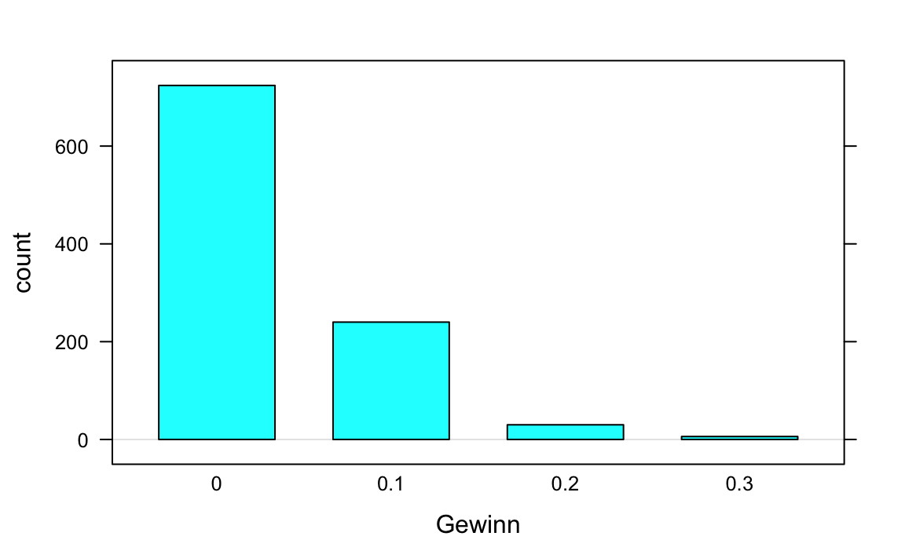
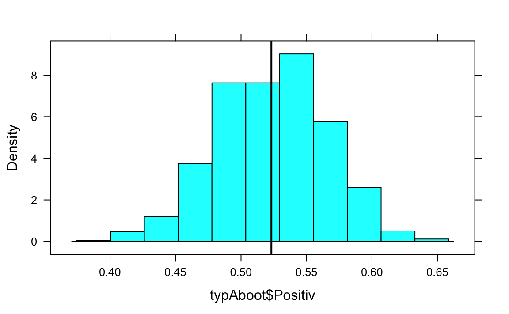

Kapitel 13 Grundlagen der Inferenzstatistik
13.1 Zufall und Wahrscheinlichkeit
In dieser Übung werden wir ein wenig programmieren, daher bietet es sich an, die Befehle in einem Skript zu speichern. Gehen Sie dazu in RStudio in das Menü File und dort auf New File und wählen R Script aus. Dies können Sie dann am Ende über File und Save bzw. Safe as speichern – und über Open File später auch wieder öffnen. Um die Befehle an die Konsole zu übergeben klicken Sie entweder auf Run (nur ausgewählte Zeile, Tastenkürzel Strg+Enter) oder Source (ganze Programm).
Zunächst laden wir wieder das Zusatzpaket mosaic, falls noch nicht geschehen:
library(mosaic)Um den Zufall zu bändigen, setzen wir den Zufallszahlengenerator, z. B. auf 1896
set.seed(1896)Dieser Befehl sorgt dafür, dass wir immer denselben “Zufall” haben.
Beim Roulette gibt es 37 Zahlen und 3 Farben: 0-37, wobei 18 Zahlen Schwarz, 18 Zahlen Rot und die 0 Grün ist – auf diese können Sie auch nicht setzen.
Angenommen Sie setzen auf Farbe. Dann beträgt Ihre Gewinnwahrscheinlichkeit \(\frac{18}{37}\), da 18 von 37 Fächern “ihre” Farbe hat, die Wahrscheinlichkeit eines Verlustes liegt bei \(\frac{19}{37}=1-\frac{18}{37}\).
Definieren wir in R einen factor-Vektor mit zwei Elementen für Gewinn und Verlust:
roulette <- factor(c("Gewinn", "Verlust"))Mit diesem Vektor können wir jetzt virtuell und ganz ohne Risiko über den Befehl resample Roulette spielen
resample(roulette, size=1, prob=c(18/37, 19/37))
#> [1] Gewinn
#> Levels: Gewinn Verlust
resample(roulette, size=10, prob=c(18/37, 19/37))
#> [1] Gewinn Gewinn Gewinn Gewinn Gewinn Gewinn Verlust Gewinn
#> [9] Verlust Gewinn
#> Levels: Gewinn VerlustMit dem Argument size wird also eingestellt, wie oft Roulette gespielt wird, prob ist der Vektor der Wahrscheinlichkeiten für die einzelnen Elemente im Ereignisvektor, hier roulette.
Über
spiele <- resample(roulette, size=100, prob=c(18/37, 19/37))wird dem Vektor spiele das Ergebnis von 100 Roulettespielen zugewiesen. Die Häufigkeitsverteilung erhalten wir wie gewohnt über den Befehl tally:
mosaic::tally(~spiele, format="proportion")
#> spiele
#> Gewinn Verlust
#> 0.51 0.49Das Gesetz der großen Zahl sagt aus, dass sich auf lange Sicht die beobachtete relative Häufigkeit der theoretischen Wahrscheinlichkeit annähert:
mosaic::tally(~resample(roulette, size=10, prob=c(18/37, 19/37)), format="proportion")
#> resample(roulette, size = 10, prob = c(18/37, 19/37))
#> Gewinn Verlust
#> 0.7 0.3
mosaic::tally(~resample(roulette, size=100, prob=c(18/37, 19/37)), format="proportion")
#> resample(roulette, size = 100, prob = c(18/37, 19/37))
#> Gewinn Verlust
#> 0.44 0.56
mosaic::tally(~resample(roulette, size=1000, prob=c(18/37, 19/37)), format="proportion")
#> resample(roulette, size = 1000, prob = c(18/37, 19/37))
#> Gewinn Verlust
#> 0.488 0.512
mosaic::tally(~resample(roulette, size=1000000, prob=c(18/37, 19/37)), format="proportion")
#> resample(roulette, size = 1e+06, prob = c(18/37, 19/37))
#> Gewinn Verlust
#> 0.486 0.514Die theoretische Wahrscheinlichkeit eines Gewinns liegt bei \(\frac{18}{37} \approx 0.486\): Achtung, dass Gesetz der großen Zahl gilt für den Durchschnitt und auf lange Sicht, evtl. Ungleichgewichte, z. B. 5 Gewinne in Folge werden im Laufe der Zeit abgeschwächt, und nicht durch anschließende 5 Verluste ausgeglichen.
Bei bestimmten Spielstrategien, z. B. bei der sogenannten Martingale oder Verdoppelungsstrategie, ist man daran interessiert, wie wahrscheinlich es ist, z. B. 8-mal in Folge zu verlieren. Natürlich kann das mit Hilfe der Binomialverteilung ausgerechnet werden, wir können es aber auch simulieren: do() ist eine einfache Schleifenfunktion in mosaic. Um z. B. 1000-mal jeweils 8 Runden Roulette zu spielen - und das Ergebnis zu speichern - genügt:
farbspiele <- do(1000)*mosaic::tally(~resample(roulette, size=8, prob=c(18/37, 19/37)),
format="proportion")farbspiele ist jetzt ein Datensatz (data.frame) mit 1000 Zeilen (=Simulationen) und den relativen Häufigkeiten für Gewinn und Verlust in den 8 Spielen in den Spalten.
Das Balkendiagramm der relativen Verlusthäufigkeit zeigt, dass es zwar selten, aber doch vorkommt, alle 8 Spiele zu verlieren.
bargraph(~Verlust, data=farbspiele, nint = 8)
Wir haben in 4 von 1000 Wiederholungen nur verloren, d. h. 8 von 8 Spielen.
Übung:
- Wenn Sie statt auf Farbe auf eine Zahl setzen, beträgt Ihre Gewinnwahrscheinlichkeit \(\frac{1}{37}\). Simulieren Sie 1000-mal 10 Spiele. Wie oft haben Sie mindestens 1-mal gewonnen?
Wenn wir uns die Verteilung der Daten der Übung angucken
zahlspiele <- do(1000)*mosaic::tally(~resample(roulette, size=10,
prob=c(1/37, 36/37)), format="proportion")
bargraph(~Gewinn, data=zahlspiele)
stellen wir fest, dass diese Daten (leider) extrem rechtsschief sind, d. h., i. d. R. gewinnen wir in keiner der 10 Runden, Gewinn=0. Wenn wir size=10 durch size=10000 ersetzen (d. h., bei jeden der 1000 Simulationen 10000 Runden spielen), passiert folgendes (Darstellung jetzt als Histogramm, da es zu sehr viele mögliche Ausprägungen für die Anzahl Gewinne gibt):
zahlspiele2 <- do(1000)*mosaic::tally(~resample(roulette, size=10000,
prob=c(1/37, 36/37)), format="proportion")
histogram(~Gewinn, data=zahlspiele2)
Die Daten werden normaler, symmetrischer, d. h., die Verteilung des Gewinnanteilswertes nähert sich einer Normalverteilung an. Diese Phänomen ist der Hintergrund des Zentralen Grenzwertsatzes.
Übung:
- Zurück zum Farbspiel (
farbspiele): Wie hoch schätzen Sie die Wahrscheinlichkeit anhand der Simulation, dass Sie mindestens die Hälfte Ihrer 8 Spiele gewinnen?
Richtig: 0.585, das ist also anscheinend recht wahrscheinlich, während der relative Anteil der Spiele, in denen Sie maximal 1 der 8 Spiele gewinnen, recht klein ist:
anteil <- sum(farbspiele$Gewinn <= 1/8)/length(farbspiele$Gewinn)
anteilDas kommt also eher selten vor. Pech. Vielleicht würden Ihnen aber auch Zweifel kommen, ob der Tisch fair ist. In der Simulation liegt also die Wahrscheinlichkeit, bei einem fairen Tisch bei 8 Spielen höchstens einmal zu gewinnen bei 3.6%.
13.2 Hypothesentest, p-Wert und Konfidenzintervall
Im Paper Hose, C., Lübke, K., Nolte, T., und Obermeier, T. (2012): Ratingprozess und Ratingergebnis: Ein Experiment bei qualitativen Ratingkriterien, Kredit & Rating Praxis (6), 12-14 wird folgendes Experiment untersucht: Unterscheidet sich die Einschätzung (Rating) eines Unternehmens, je nach dem, ob die Person alleiniger Entscheider (Typ A) oder derjenige ist, der die Entscheidungsvorlage vorbereitet (Typ B). Im Rahmen des Experiments wurden die Studierenden zufällig den verschiedenen Typen A und B zugeordnet. Von 151 alleinigen Entscheidern (Typ A) beurteilten 79 das Beispielunternehmen überwiegend positiv (++, +), von 143 Entscheidungsvorlagenerstellern (Typ B) entschieden ebenfalls 79 überwiegend positiv.
Zeigt das unterschiedliche Verhältnis: Typ A: \(\frac{79}{151}=52.32\)% zu Typ B: \(\frac{79}{143}=55.24\)%, dass alleinige Entscheider die Bonität kritischer einstufen, oder könnte das Ergebnis Zufall sein?
Das Chancenverhältnis, das Odds Ratio liegt bei \(\frac{\frac{79}{151-79}}{\frac{79}{143-79}}=0.89\), dass ein alleiniger Entscheider positiv einstuft – im Vergleich zum vorläufigen Entscheider.
Zunächst erzeugen wir einen Vektor der Länge 2 mit den Entscheidungstypen, aus dem wir simulieren können:
typ <- factor(c("A", "B"))
entscheider <- rep(typ, c(151,143))
mosaic::tally(~entscheider)
#> entscheider
#> A B
#> 151 143sowie einen Vektor der Entscheidungen:
rating <- factor(c("Positiv", "Nicht Positiv"))
entscheidungen <- rep(rating, c(79+79, (151+143)-(79+79)))
mosaic::tally(~entscheidungen)
#> entscheidungen
#> Nicht Positiv Positiv
#> 136 158Aus diesem Vektor ziehen wir eine zufällige Stichprobe von 151 Entscheidungen von Typ A.
simentscheidung <- sample(entscheidungen, size=151)
mosaic::tally(~simentscheidung)
#> simentscheidung
#> Nicht Positiv Positiv
#> 71 80Hier wären also zufällig 80 der 151 Entscheidungen den Typ A Positiv gewesen – wenn es keinen Zusammanhang zwischen Typ und Rating gibt.
Wir oft kommt also zufällig heraus, dass mindestens 79 der 151 Entscheidungen des Typs A positiv zugeordnet werden? Simulieren wir das z. B. 1000-mal:
entsim <- do(1000)*mosaic::tally(~sample(entscheidungen, size=151))
sum(entsim$"Positiv">=79)/length(entsim$"Positiv")
#> [1] 0.72Unter der Nullhyothese, dass das Ergebnis zufällig war, wurden in der Simulation in 72% der Fälle mindestens 79 dem Typ B zugeordnet. Dieser p-Wert spricht also nicht wirklich gegen das Zufallsmodell. Hinweis: Wir werden in späteren Kapiteln bessere Methoden kennenlernen, insbesondere auch solche die alle Informationen aus den Daten enthalten und sich nicht nur auf einen Anteilswert beziehen.
Über
typA <- rep(rating, c(79, 151-79))erzeugen wir uns einen Vektor, der die \(79\) positiven und \(151-79\) nicht positiven Urteile von Typ A (alleinige Entscheidung) enthält.
mosaic::tally(~ typA)
#> typA
#> Nicht Positiv Positiv
#> 72 79Wenn wir jetzt diesen Vektor z. B. 1000-mal resampeln:
typAboot <- do(1000)*mosaic::tally(~resample(typA), format="proportion")erhalten wir 1000 (resampelte) Stichproben, die jeweils einen zufälligen Stichprobenanteil haben:
histogram(~typAboot$Positiv, v=79/151) # 79/151: Anteil der Originalstichprobe
In 95% der Fälle liegt dieser zufällige Stichprobenanteil hier zwischen
ki <- c(sort(typAboot$Positiv)[1000*0.025], sort(typAboot$Positiv)[1000*(1-0.025)])
ki
#> [1] 0.444 0.603sort sortiert den Vektor aufsteigend und über[] wird einmal auf das 2.5%-Quantil und einmal auf das 97.5%-Quantil zugegriffen. Anmerkung: Sollte z. B. das 2.5%-Quantil nicht auf eine konkrete Beobachtung fallen, so müssten wir runden mit round(), abrunden floor() bzw. aufrunden ceiling().
histogram(~typAboot$Positiv, v=ki)
Dies ist das Nicht-parametrische Bootstrap-Konfidenzintervall.
Übung:
- Bestimmen Sie das 90% nicht-parametrische Bootstrap-Konfidenzintervall für eine nicht-positive Einschätzung im Fall Entscheidungsvorlage (Typ B). Würde damit eine Nullyhpothese \(p=0.6\) zum Signifikanzniveau 10% verworfen?
13.3 Rechnen mit der Normalverteilung
In der Finanzwissenschaft wird häutig die Annahme verwendet, dass die (logarithmierten) Renditen von Anlagen normalverteilt sind.
Hier drei Kennzahlen der logarithmierten Tagesrenditen von Aktienunternehmen in 2015 in %.
| Anlage | AAPL | FB | GOOGL |
|---|---|---|---|
| Mittelwert | -0.08 | 0.11 | 0.15 |
| Standardabweichung | 1.69 | 1.62 | 1.77 |
Unter der Annahme der Normalverteilung der logarithmierten Renditen können wir jetzt die Wahrscheinlichkeit eines Tagesverlustes der Apple Aktie (AAPL) berechnen über
xpnorm(0, mean=-0.08, sd=1.69 )
#>
#> If X ~ N(-0.08, 1.69), then
#>
#> P(X <= 0) = P(Z <= 0.0473) = 0.519
#> P(X > 0) = P(Z > 0.0473) = 0.481
#> [1] 0.519
Die mosaic Funktion xpnorm ist eine Erweiterung der normalen R Funktion pnorm, die den Wert der Verteilungsfunktion an einer gegebenen Stelle zurückgibt – für jede Verteilung wird hierfür der vorgestellte Buchstabe p verwendet.
Für Facebook (FB) lag die Wahrscheinlichkeit eines Gewinns demnach bei
xpnorm(0, mean=0.11, sd=1.62, lower.tail = FALSE)
#>
#> If X ~ N(0.11, 1.62), then
#>
#> P(X <= 0) = P(Z <= -0.0679) = 0.473
#> P(X > 0) = P(Z > -0.0679) = 0.527
#> [1] 0.527
Übung:
- Welche der drei Aktien hat die höchste Wahrscheinlichkeit eine Tagesrendite über 2.5% zu erzielen?
Dabei wird hier immer auch die Z-Transformation, die Standardisierung, mit angegeben. Am 26.05.2015 (\(r=-2.23\)) betrug der \(z\)-Wert der Apple Aktie demnach bei
(-2.23 - (-0.08)) / 1.69
#> [1] -1.27Die Tagesrendite von Apple war also 1.272 Standardabweichungen unter dem Mittelwert. Für Facebook lag die Tagesrendite bei -1.51, der \(z\)-Wert demnach bei:
(-1.51 - (0.11)) / 1.62
#> [1] -1Der 26. Mai 2015 war also auch für Facebook-Anlegerinnen kein guter Tag, aber immer noch besser als bei Apple.
Übung:
- Die Rendite von Google am 26.05.2015 betrug -1.33. Wie hoch ist der \(z\)-Wert? Interpretieren Sie die Aussage des Ergebnisses.
Wenn wir zu einen gegebenen Wert der Rendite den Wert der Verteilungsfunktion, d. h. den prozentualen Anteil kleiner oder gleich großer Werte suchen (\(P(X \leq x)\)) verwenden wir pnorm bzw. xpnorm. Wenn die Überschreitungswahrscheinlichkeit (\(P(X>x)\)) gesucht ist, kann zusätzlich die Option lower.tail = TRUE gesetzt werden, oder 1-pnorm() gerechnet werden.
Um zu einem gegebenen Anteil (Prozentwert) den zugehörigen Wert der Rendite zu finden, wir also das Quantil suchen, dann wird p durch q ersetzt, also qnorm bzw. xqnorm.
Z. B. für die 5% schlechtesten Tage der Appleaktie
mosaic::xqnorm(0.05, mean=-0.08, sd=1.69 )
#> P(X <= -2.85980262954799) = 0.05
#> P(X > -2.85980262954799) = 0.95
#> [1] -2.86 Die Wahrscheinlichkeit beträgt also 5%, dass die Tagesrendite unter -2.86 liegt.
Die Wahrscheinlichkeit beträgt also 5%, dass die Tagesrendite unter -2.86 liegt.
Für die Facebook Aktie gilt, dass Sie nur mit einer Wahrscheinlichkeit von 1% über 3.879 lag:
mosaic::xqnorm(0.01, mean=0.11, sd=1.62, lower.tail = FALSE)Übung:
- Sie wollen Ihre Google-Aktien absichern. Wie groß ist bei einer maximalen Eintretenswahrscheinlichkeit von 1% der Tagesverlust mindestens?
13.4 Übung
In einem Test zur Achtsamkeit Sauer S, Lemke J, Wittmann M, Kohls N, Mochty U, and Walach H. (2012) How long is now for mindfulness meditators? Personality and Individual Differences 52(6), 750–754 konnten 34 von 38 Studienteilnehmern der Kontrollgruppe nach einer Instruktion die Dauer der Fixierung des Necker Würfels (Link/Bild) steigern.
- Kann diese Verbesserung bei fast 90% der Personen zufällig sein? Bestimmen Sie die Wahrscheinlichkeit, dass zufällig mindestens 34 von 38 Personen eine Verbesserung erzielen mit Hilfe einer Simulation.
- Bestimmen Sie ein nicht-paramatrisches Bootstrap-Konfidenzintervall, dass den Anteilswert der Verbesserung in 95% der Fälle überdeckt.
Der IQ hat nach Konstruktion einen arithmetischen Mittelwert von 100 bei einer Standardabweichung von 15.
- Wie hoch ist der Anteil der Personen mit einem IQ von 130 oder größer?
- Welchen IQ sollte eine Person mindestens haben, wenn Sie zu den 1% Personen mit dem höchsten IQ gehören will?
13.5 Literatur
- David M. Diez, Christopher D. Barr, Mine Çetinkaya-Rundel (2014): Introductory Statistics with Randomization and Simulation, https://www.openintro.org/stat/textbook.php?stat_book=isrs, Kapitel 2
- Nicholas J. Horton, Randall Pruim, Daniel T. Kaplan (2015): Project MOSAIC Little Books A Student’s Guide to R, https://github.com/ProjectMOSAIC/LittleBooks/raw/master/StudentGuide/MOSAIC-StudentGuide.pdf, Kapitel 3.5, 3.6
- Chester Ismay, Albert Y. Kim (2017): ModernDive – An Introduction to Statistical and Data Sciences via R, https://ismayc.github.io/moderndiver-book/
- Maike Luhmann (2015): R für Einsteiger, Kapitel 12
- Andreas Quatember (2010): Statistik ohne Angst vor Formeln, Kapitel 2, 3.1-3.3, 3.13
- Daniel Wollschläger (2014): Grundlagen der Datenanalyse mit R, Kapitel 5, 11
13.6 Lizenz
Diese Übung wurde von Karsten Lübke entwickelt und orientiert sich an der Übung zum Buch OpenIntro von Andrew Bray, Mine Çetinkaya-Rundel und Mark Hansen und steht wie diese unter der Lizenz Creative Commons Attribution-ShareAlike 3.0 Unported.
13.7 Versionshinweise
- Datum erstellt: 2017-04-12
- R Version: 3.3.2
mosaicVersion: 0.14.4